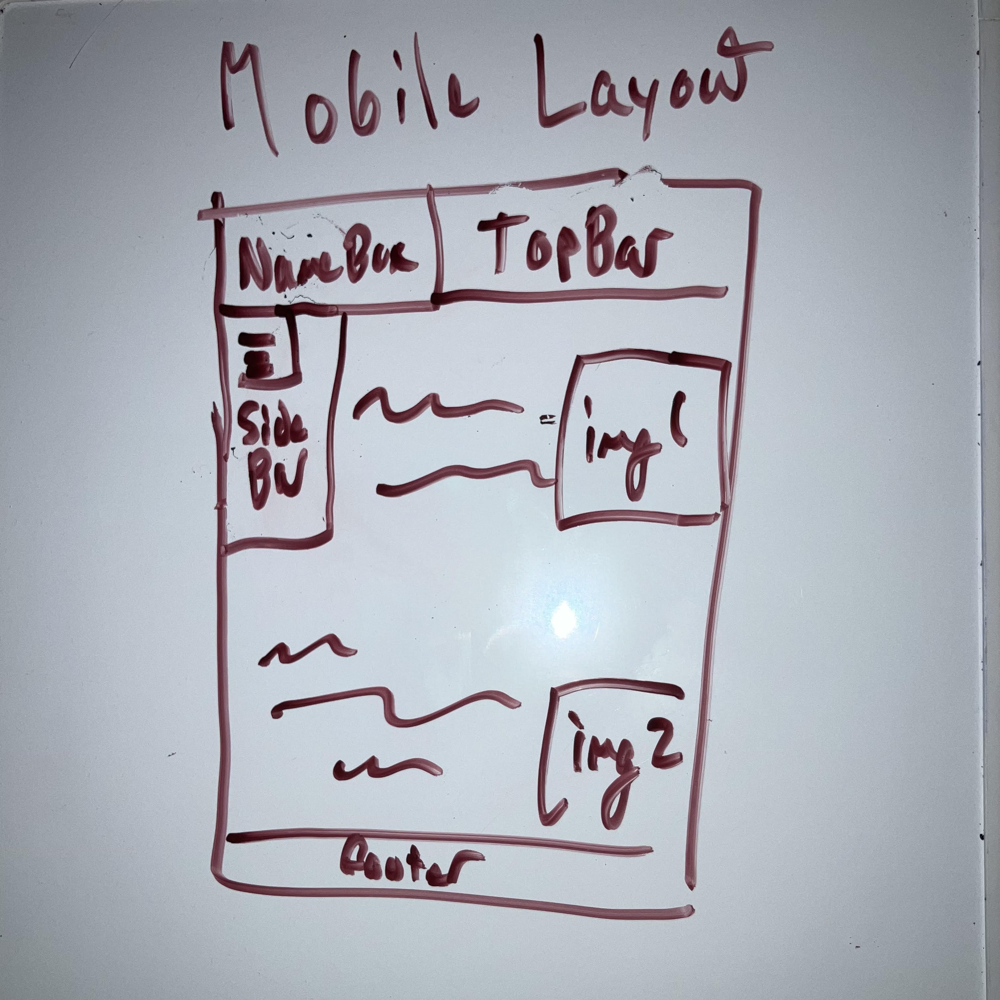

Link to Original Source PDF-
Design PDF
Link to Spec.html-
Spec.html
Images Used (for placeholders)-
https://uq.pressbooks.pub/digital-essentials-types-assignments/chapter/3d-models/
https://inlingogames.com/blog/the-best-2d-art-styles-for-games/
Fonts Used-
Quicksand- https://fonts.google.com/specimen/Quicksand?preview.script=Latn
Fredoka- https://fonts.google.com/specimen/Fredoka

Mobile Layout-
As part of my spec, i developed a rough idea for my mobile layout. However, upon attempting to
implement the design, I discovered several issues the compressing of the side bar to be more compact.
I did this with the intention of having the design make more room for the main content while
maintaining the funcitonality of the sidebar's dropdown feature. However, upon implementation I ran into
an issue around the Grid's lack of ability to implement grids with a reverse 'L' structure, and thus I chose
to continue the sidebar for the length of the page, similar to the full-size page.
Challenging Elements-
The primary challenging element of this entire project was matching my design in HTML code.
My original design PDF made a large number of assumptions around what would be and would not be easy
to implement in terms of grid structure. Primarily, the reverse 'L' shape that the main content box
would have to fit to in order to accomodate for the box containing my name to be the size that it was.
While I tried to order these sections to where the name box would be layered above the other grid containing
the main text and other content, these efforts worked for a while but failed upon being subjected to responsive design.
As a result, I chose to simply abandon that element of the design and instead opt for a more simplistic grid layout overall
Exceptional Elements-
I feel that the greatest element where I went above and beyond was the responsiveness on the images, as I worked to not only ensure that the
images present always adjusted to the current screen size, but were particularly precise on when to adjust, switching twice from being a column
presentation, to a horizontal flexbox, then back to a column presentation. Additionally, the images also have the grid container they were present in
combine with the main content grid area, a solution that took quite a while for me to figure out
Goal of Site-
The goal of my site is largely to create a portfolio for myself and my own work for
use in presentation to employers, recruiters and other potential groups in industry
Additional Notes-
I would like to note, as I fear it may be overlooked without clear indication, that the primary element I used for layering was the nameBox grid area having its contents layered ontop of the
sideBar element, along with using sticky positioning to have the topBar and nameBox move along with the user as they scroll through the page